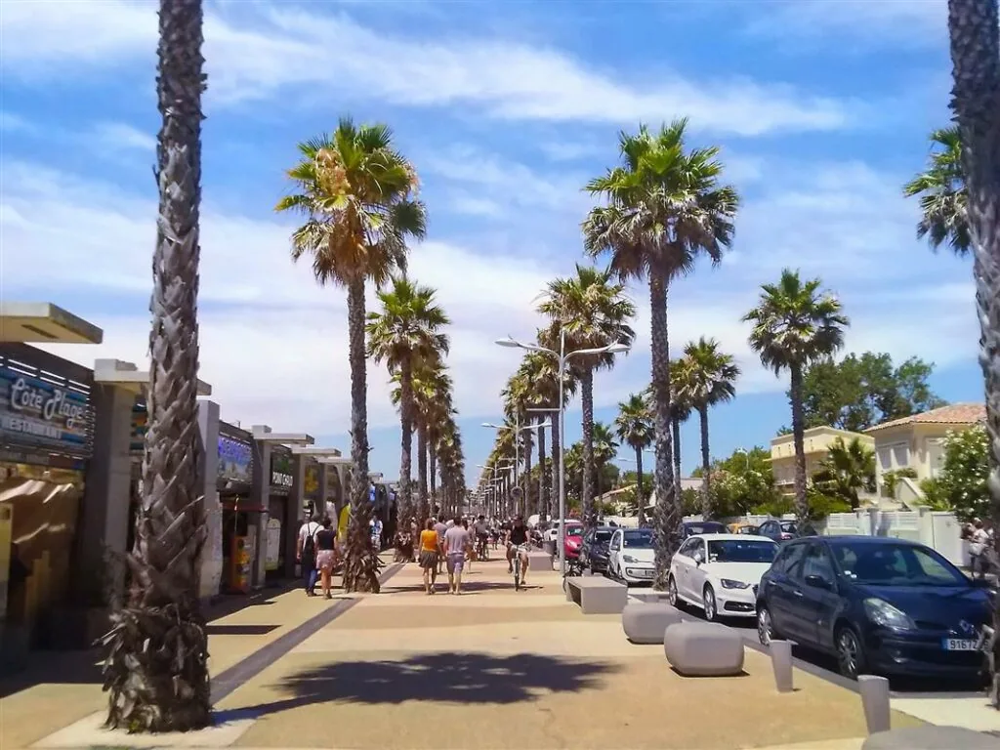

Aux portes de la résidence
Le port, le centre,
Le port, le centre,
la plage,
à quelques minutes à pied.
Le port et le centre animé de Marseillan-Plage sont accessibles à pied en quelques minutes depuis la résidence, en suivant les berges du canal de navigation.
Au centre de la station : lieux de promenade (Avenue de la Méditerranée, promenoir du front de mer), marché quotidien en saison, commerces, bars, restaurants, parc d’attractions.
Au port de plaisance, de nombreuses activités nautiques : promenade en mer, pêche, plongée, location de bateaux, parachute ascensionnel.
